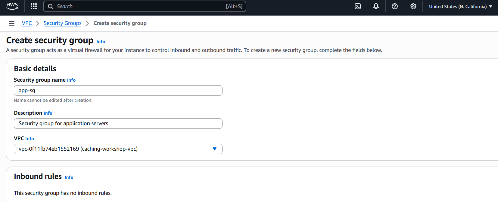
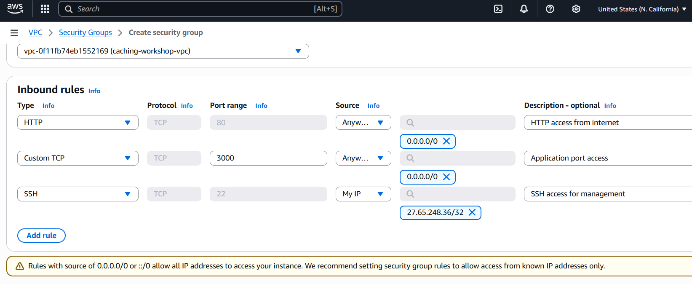
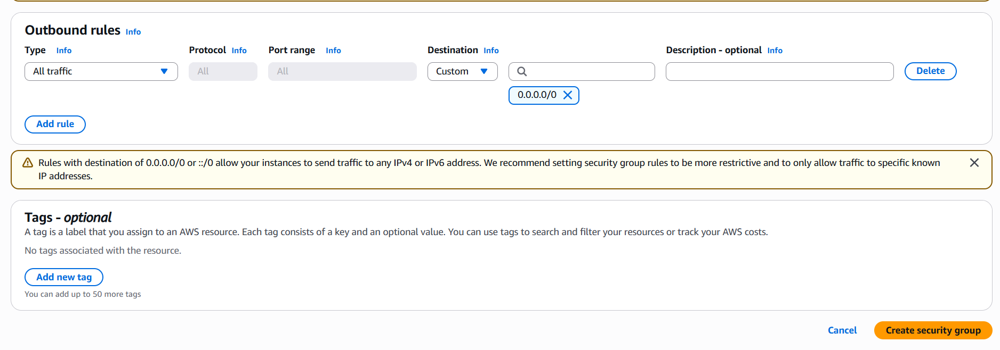
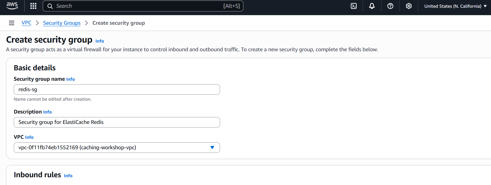
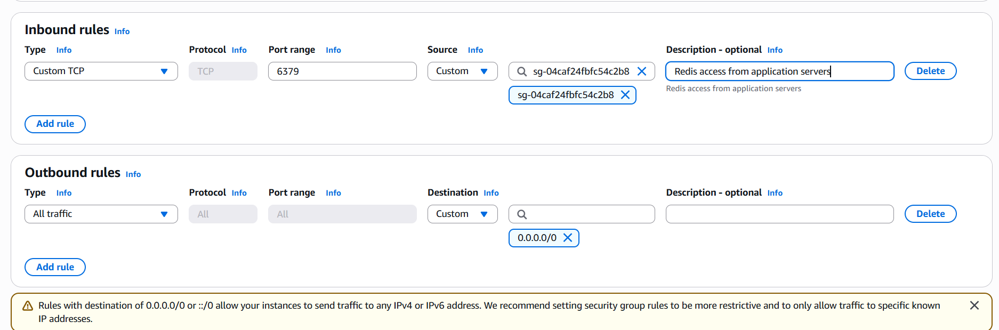
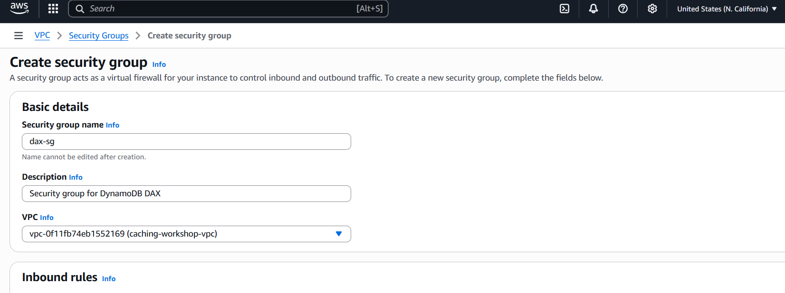
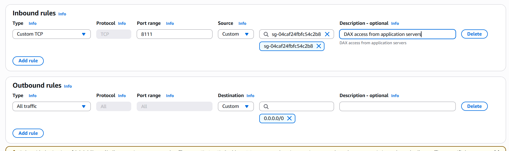
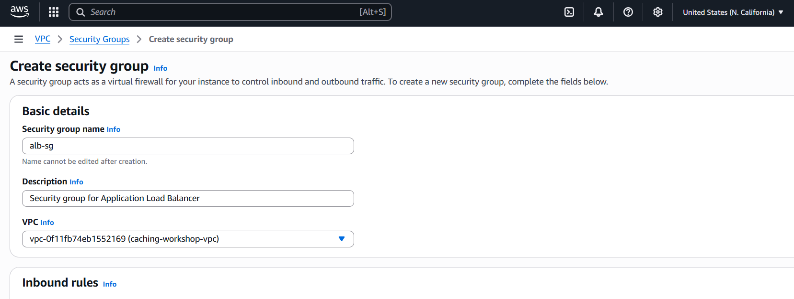
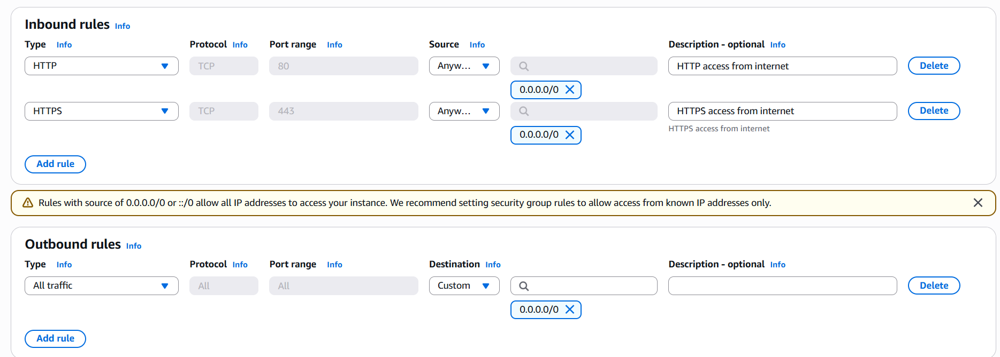
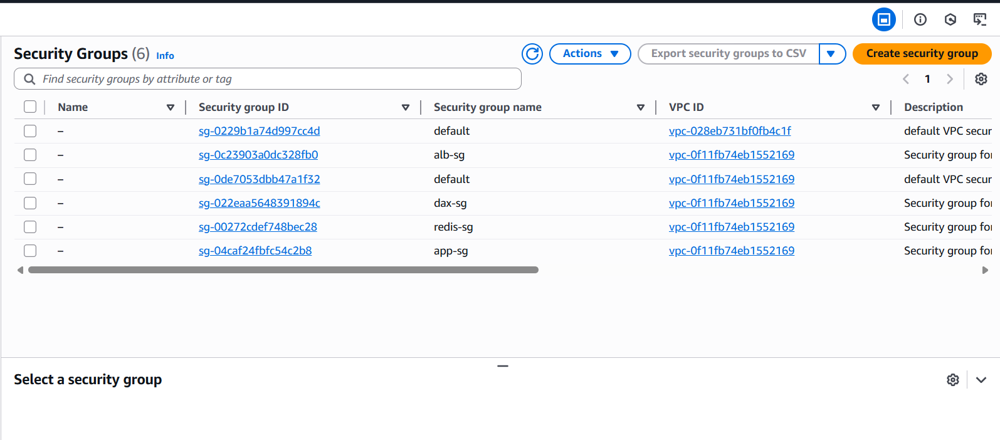

Security groups act as virtual firewalls that control inbound and outbound traffic for AWS resources. We’ll create specific security groups for each component of our caching architecture.
We’ll create four security groups:
app-sg) - For EC2 instancesredis-sg) - For ElastiCachedax-sg) - For DynamoDB DAXalb-sg) - For Application Load BalancerIn the VPC Console, click Security Groups in the left navigation
Click Create security group
Configure the application security group:
app-sgSecurity group for application serverscaching-workshop-vpc
Rule 1: HTTP Access
HTTP access from internetRule 2: Application Port
Application port accessRule 3: SSH Access
SSH access for management

Create the Redis security group:
redis-sgSecurity group for ElastiCache Rediscaching-workshop-vpc
Rule 1: Redis Access
app-sg)Redis access from application servers
We’re allowing access only from the application security group, following the principle of least privilege.
Create the DAX security group:
dax-sgSecurity group for DynamoDB DAXcaching-workshop-vpc
Rule 1: DAX Access
app-sg)DAX access from application servers
Create the load balancer security group:
alb-sgSecurity group for Application Load Balancercaching-workshop-vpc
Rule 1: HTTP Access
HTTP access from internetRule 2: HTTPS Access (Optional)
HTTPS access from internet

Record the security group IDs for use in subsequent steps:
sg-xxxxxxxxx (app-sg)sg-xxxxxxxxx (redis-sg)sg-xxxxxxxxx (dax-sg)sg-xxxxxxxxx (alb-sg)✅ Principle of Least Privilege: Each security group only allows necessary traffic
✅ Defense in Depth: Multiple layers of security controls
✅ Source-Based Access: Using security groups as sources instead of IP ranges
✅ Port Specificity: Only opening required ports
✅ Management Access: SSH access restricted to your IP
Cause: Security groups must be in the same VPC
Solution: Verify all security groups are created in the correct VPC
Cause: Security group rules not properly configured
Solution:
Cause: Security group blocking traffic or routing issues
Solution:
Your network security is now properly configured! You have:
✅ Application Security Group for EC2 instances
✅ Redis Security Group for ElastiCache access
✅ DAX Security Group for DynamoDB DAX access
✅ Load Balancer Security Group for internet traffic
✅ Least-privilege access between components
✅ Proper traffic flow from internet to backend services
Security groups are stateful, meaning if you allow inbound traffic on a port, the corresponding outbound traffic is automatically allowed.
Next, we’ll set up DynamoDB and DAX for our database layer with caching.